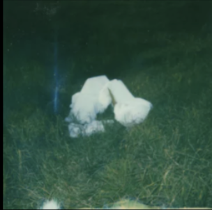
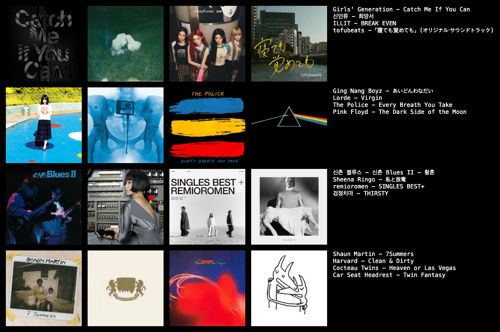
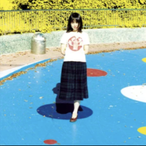
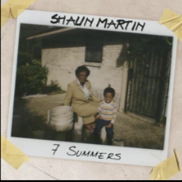
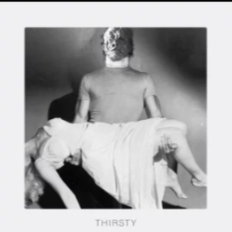

L이 사랑하는 노래

날씨의 요정
신인류
앨범 커버 또는 아래 버튼 클릭 · 01:08
▶ YouTube에서 재생하기 ↗
당신은 어떤 방식으로 음악을 좋아하시나요?
MACBAK 음악문화 연구회
발표자 · 이민하
03
누군가는 가사를, 누군가는 사운드를.
누군가는 추억을, 누군가는 새로운 발견을.
그 차이를 네 가지 기준으로 나눠보면 어떨까?
04
L
LYRICS
가사와 이야기, 말의 의미에 집중
S
SOUND
멜로디와 악기, 음색과 리듬에 집중
05
F
FAMILIAR
좋아하던 곡을 다시 듣고 깊이 즐기기
N
NOVEL
모르는 음악을 찾아 새롭게 탐색하기
06
E
EMOTIONAL
감정과 기억에 몰입하며 감상
A
ANALYTICAL
구조와 편곡, 디테일을 살피며 감상
07
P
PERSONAL
혼자 듣고 나만의 경험으로 간직하기
C
COMMUNAL
함께 듣고 이야기하며 공유하기
08 / 음BTI
09 / NOW PLAYING — LYRICS VS SOUND
L이 사랑하는 노래

날씨의 요정
신인류
앨범 커버 또는 아래 버튼 클릭 · 01:08
▶ YouTube에서 재생하기 ↗S가 사랑하는 노래
Current Affairs
Lorde
앨범 커버 또는 아래 버튼 클릭 · 02:00
▶ YouTube에서 재생하기 ↗10 / NOW PLAYING — EMOTIONAL VS ANALYTICAL
E가 사랑하는 노래

I Don't Wanna Die
GING NANG BOYZ
앨범 커버 또는 아래 버튼 클릭 · 03:15
▶ YouTube에서 재생하기 ↗A가 사랑하는 노래

The Yellow Jacket
Shaun Martin
앨범 커버 또는 아래 버튼 클릭 · 03:40
▶ YouTube에서 재생하기 ↗11 / NOW PLAYING — PERSONAL VS COMMUNAL
P가 사랑하는 노래

피와 갈증
검정치마
앨범 커버 또는 아래 버튼 클릭 · 처음부터
▶ YouTube에서 재생하기 ↗C가 사랑하는 노래
Every Breath You Take
Sting
앨범 커버 또는 아래 버튼 클릭 · 처음부터
▶ YouTube에서 재생하기 ↗13 / 맥박 F 쏠림 현상
Q11
추천받은 노래가 처음에 별로였다면?
약 74%익숙한 내 취향으로
돌아간다
약 26%몇 번 더 듣고
매력을 찾아본다
Q7
음악 앱에서 더 자주 누르는 것은?
약 70%내 플레이리스트·
좋아요 목록
약 30%추천 믹스·
새로운 발매 목록
우리는 새로운 음악보다, 이미 좋아하는 음악에 더 자주 손이 간다.
14
우리는 새로운 음악을 좋아한다고 말했지만,
사실은 익숙한 음악에 더 손이 가는 사람들이었다.
‘사람들’이 모르는 음악을 찾는 데 집중하느라,
‘내’가 모르는 음악을 알아가는 일에는
소홀했던 건 아닐까?
당신은 어떤 방식으로 음악을 좋아하시나요?
MACBAK 음악문화 연구회